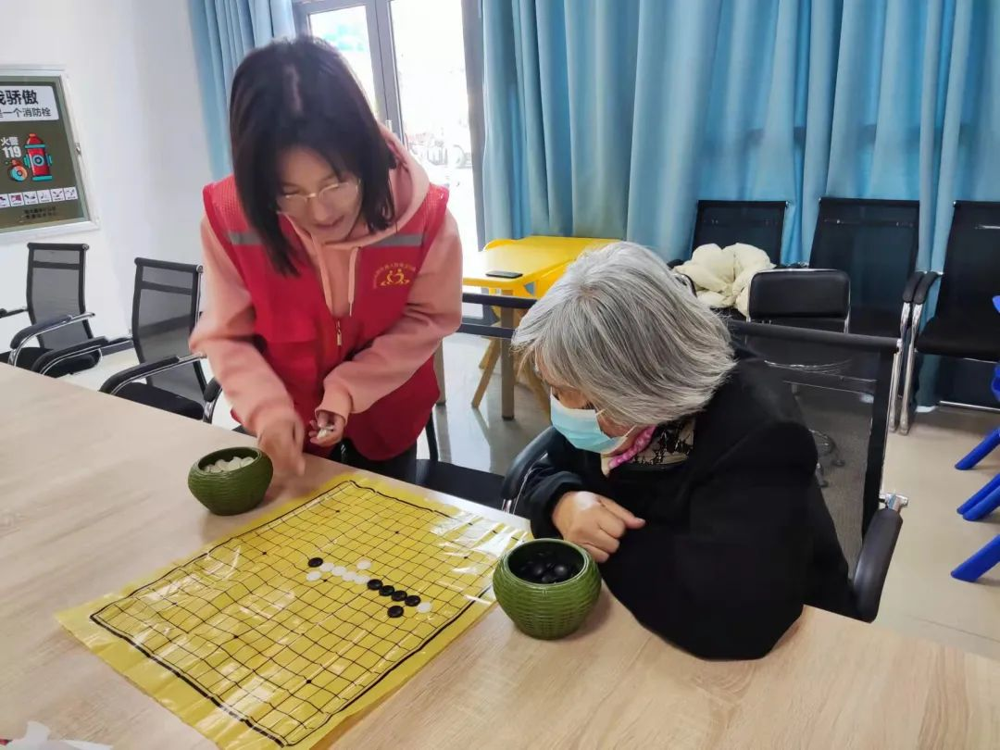
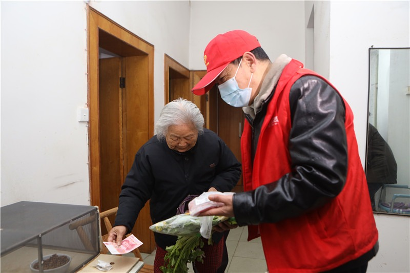
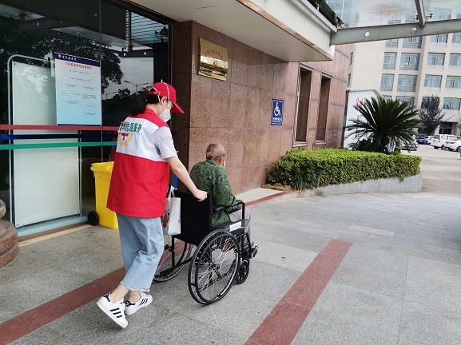
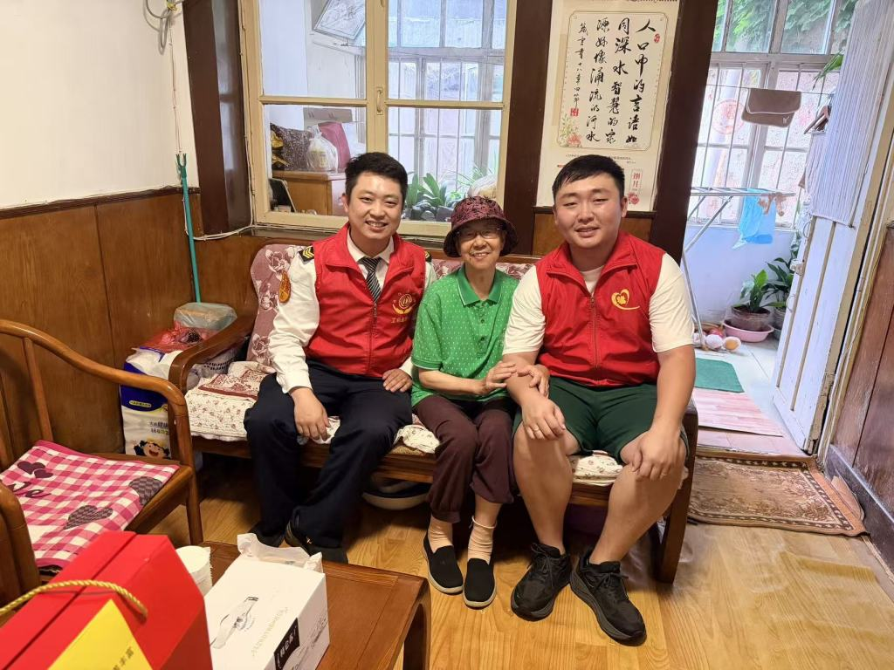

空巢之痛：正在发生的现实
人口老龄化加速之下，空巢与独居已成为数亿老年人普遍的生活形态，孤独感并非个别现象，而是群体的常态。
数据来源：国家统计局 · 国家卫健委调查老龄化程度
每 100 位中国人中，约 23 位已年满 60 岁
空巢结构逐级收窄
老年人口 → 空巢老人 → 完全独居，逐级递减
孤独感蔓延
不同调查口径下的独居老人孤独感比例
问题不在"没人愿意帮"，而在"互相找不到"
社区里并不缺少善意，缺的是一座桥。空巢老人与青年志愿者之间，横亘着一道真实存在的信息壁垒。
空巢老人 · 需求侧
有需求，无人应答
- 独居在家，突发就医、买菜代办等需求不知道找谁求助
- 不熟悉智能手机与线上平台，触达服务渠道的能力弱
- 对陌生人上门服务心存顾虑，信任建立缺乏依据
- 长期缺乏陪伴，情绪与精神需求无处安放
需求真实存在，却始终沉默
青年志愿者 · 供给侧
有热情，无处对接
- 愿意参与社区助老服务，却不知道身边谁真正需要帮助
- 碎片化时间难以匹配固定服务排期，参与门槛高
- 缺乏统一的组织渠道与规范化流程，担心服务风险
- 服务付出难以被记录、被认可，持续动力不足
善意亟待释放，却无处安放
双方都在社区里，却互相看不见。信息壁垒，正是空巢助老服务"最后一公里"的梗阻。
我们是什么：匹配引擎与组织工具
空巢守望不直接提供服务，而是为社区已有的志愿服务体系装上"精准对接"与"高效组织"的能力。
平台本身不直接提供服务，而是作为匹配引擎与组织工具，把空巢老人的需求与青年志愿者的善意精准对接，提升社区已有志愿服务体系的效率。
精准对接的匹配引擎
基于需求类型、地理位置、时间档期与服务能力的多维度匹配，让对的志愿者遇见对的需求，减少双方试错成本。
赋能社区的组织工具
为社区居委会、志愿团队提供需求登记、排班协调、服务留痕与数据统计的一体化工具，放大已有志愿力量。
建立信任的信用底座
志愿者实名认证与服务记录全程留痕，老人可查看服务者档案与评价，让每一次上门都安心、透明、可追溯。
六大核心能力，支撑一座"守望之桥"
围绕"发布—匹配—履约—沉淀"全链路设计，老人用得动，志愿者用得上，社区管得清。
AI 智能匹配
结合需求类型、地理位置、时间档期与志愿者能力标签，为每位老人推荐最合适的服务者，实现供需精准对接。
需求一键发布
支持文字、语音或子女代发，覆盖陪诊、买菜、陪聊等多元需求，三步完成发布，老人零门槛上手。
志愿者信用档案
实名认证、服务经历与评价记录构成个人信用档案，老人接单前可放心查看，双向建立信任。
服务记录与评价
服务过程打卡留痕，完成后双方互评，服务时长自动沉淀为公益记录，可导出志愿服务证明。
社区协同组织
居委会与志愿团队可创建服务活动、批量登记需求、安排值班排班，让社区志愿力量统一调度、高效运转。
社区数据看板
服务覆盖、需求满足率、志愿活跃度实时可视，为社区决策提供依据，让每一份善意都有迹可循。
一条闭环：从需求到陪伴，全程留痕
服务在平台上形成"发布—匹配—履约—沉淀"的完整闭环，闭环中的每一步都被记录，成为下一次更好匹配的依据。
需求发布
老人或子女代发需求，支持语音录入，覆盖陪诊、买菜、陪聊等场景
AI 智能匹配
按位置、时间、技能与信用多维匹配，向合适志愿者推送需求
确认接单
志愿者接单，老人可查看其信用档案，双方确认服务安排
服务履约
上门陪伴服务，定位打卡留痕，全程记录可追溯
评价与沉淀
双方互评，服务时长沉淀为公益记录，信用持续积累
每一次服务都在沉淀数据与信用，让下一次匹配更精准——善意在闭环中不断增值，形成社区互助的良性循环。
陪伴，落在真实的生活细节里
平台连接的服务，是社区里一次次具体的、有温度的陪伴。以下为社区志愿服务的真实场景示意。

情感陪伴
陪老人下棋聊天、读书读报，让独居时光不再孤单

生活代办
代购代买、上门送餐，解决老人日常琐事之扰

陪诊出行
陪同就医问诊、外出办事，守护老人出行安全

走访关怀
定期上门走访慰问，让老人感受到被惦记的温暖
一座桥的价值：让善意双向抵达
对老人是陪伴与被看见，对志愿者是价值与认可，对社区是更高效、更温暖的治理。
缓解老人孤独
让陪伴可及，显著减少空巢老人的孤独感与无助感
激发志愿热情
让志愿者的善意有处安放，付出被记录、被认可
赋能社区治理
提升社区志愿服务体系效率，让互助成为社区常态
推动代际融合
青年与长者双向奔赴，重建邻里守望的社会温度